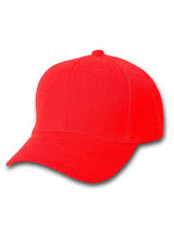

The Six Thinking Hats method is a way to organize a team based on their natural insticts and roles. Each "hat" signifies a way of thinking: White (information), Red (emotions), Black (judgement), Yellow (optimism), Green (creativity), and Blue (management). This method helps everyone within a team setting understand different perspectives and views. Personally I naturally think emotionally so I fall under the red hat. Thinking emotionally means I focus on empathizing with others and letting emotions be visible. Versus letting them get overshadowed by logic and facts. 
In my interview with my friend, Farah Ma. A new grad from Sheridan, and fellow artist. She loved the idea behind my website and how it positions itself to be a tool for other artists. As an artist herself she believes in the goal of my website, however she has concerns with the execution of it. She asked me what I will do about potential users uploading images that are not reference material. She qondered how I will determine images based on their effectiveness as reference. She also asked how I would prohibit users from uploading AI-generated art. Her questions fell into the white and black hats as she wanted the facts and capabillities of my website. My idea behind the website is very much reactionary and emotionally which alludes to my red hat.
My project has changed in it's scale. As I don't think it's possible for me to create a website that's able to self moderate images and users. Instead I hope to create a website based on trust and maybe a point system, in which selected users can vote on the accuracy of an image pertained to its tagging.